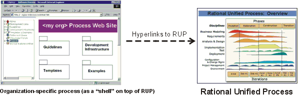
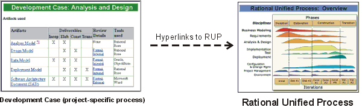
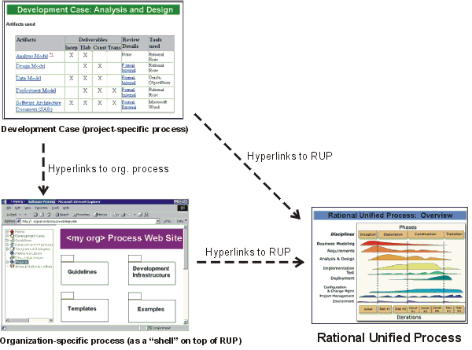

Concepts:
Process Configuration
Topics
In general, there are two levels at which the software-engineering process
can be adapted or modified:
- An organization-wide process
where process engineers modify, improve or tailor a common process to be
used organization-wide. This takes into consideration issues such as the
application domain, reuse practices, and core technologies mastered by the
company. One organization can have more than one organization-wide process,
each adapted to a different type of development. In many cases, the Rational
Unified Process (RUP) serves as the organization-wide process.
- A project-specific process
where process engineers take the organization-wide process and further
refine it for a given project. This level takes into consideration the size
of the project, the reuse of company assets, the initial cycle ("green-field
development") versus the evolution cycle, and so on. The
project-specific process is what is described in the RUP as a Development Case.
The RUP includes a process engineer toolkit with
supporting tools for configuring a process, including example process and
project webs. For details, refer to the Process
Engineer Toolkit.
Whether or not you should modify the RUP is discussed in
detail in Toolkit: Modifying the
Rational Unified Process.
Configuring, or customizing, the RUP for the
organization means that you develop your own organization-wide process product
using the RUP as the baseline. This means that you:
Develop reusable development cases that the projects can use as a starting
point when developing the project's development case. There can be more than one
reusable development case. For example, there can be one reusable development
case per type of development.
A reusable development case is a development case with a number of decisions,
or suggestions, already made.
The templates provided with the RUP are ready-to-use. However, many organizations have their own
standards for the layout of documents and reports. In that case, you'll need to
change the layout of the templates and the logotype. The following pages
describe how to customize the Microsoft® Word™ templates and the Adobe®
FrameMaker™ templates:
Develop guidelines for the Environment
Artifact Set to be reused by the software-development projects,
including:
Several of these guidelines contain information that can be used by many
projects. Programming Guidelines and Manual Styleguide are often so general that
once you have them, they can be reused by most projects.
A good strategy is to develop these guideline artifacts within the scope of
one project. Decide after that project whether to reuse the guideline or whether
it needs to be modified. The guidelines can be reused by removing
project-specific information.
You can build an organization-wide process product as a "shell"
on top of the RUP. Build it as a web site and have
hyperlinks to the RUP. See Process
Engineer Toolkit. The size of the organization-wide process can range
from a few web pages to a fully-featured web site with a search engine,
index, and navigation tools, such as a treebrowser.

An organization-specific process
You can choose to use the same tools and techniques to develop the
organization-wide process, that were used to develop the RUP. Make sure the "shell" clearly specifies what parts of the
RUP the organization will, and won't, use.
For example, an organization-wide process can contain:
- Development cases, more or less ready-to-use for the projects
- Templates tailored to the organization
- Examples specific to the organization
- Guidelines that can be used as-is, without modifications; for example,
Programming Guidelines
- Other process material; for example, if you have a process for testing
that you want to keep, add hyperlinks from the organization-wide
process
An organization can have more than one organization-wide process. For
example, if your organization develops software for different application
domains, you could have one organization-wide process for each application
domain.
We recommend that every project configures the process, which means
that you:
Develop a Development Case that
describes the project's process. The development case references the RUP for details. Notice that a development case can be very
lean and does not have to cover all disciplines. See Activity:
Develop Development Case for more information.
We recommend that the front-end of the Development Case is developed
as a minimal set of web pages, and that details provided in the RUP, or in a similar knowledge base, are accessed by reference
using hyperlinks.

A Development Case with hyperlinks to the online RUP.
Customize the document templates and report templates the project will use.
The Microsoft Word and FrameMaker templates
are designed for the addition of your company name and logotype. We also expect
projects will customize the templates to their specific needs by adding or
removing sections. See Activity: Develop
Project-Specific Templates and Artifact:
Project-Specific Templates for details.
Decide which of these guidelines from the Environment
Artifact Set should be developed to support the project-specific process,
then develop them:
These guidelines help the project members to get a quick-start and help
enforce a common way to describe artifacts. Notice that these guidelines do not
have to be completely described documents. A cost-effective method is to develop
sample artifacts that can serve as examples of how artifacts should look. For
example, a sample use case may serve as the Use-Case Modeling Guidelines. The RUP
comes with ready-to-use examples of Programming
Guidelines for C++, Ada,
and Java.
Each project develops a development case that will have hyperlinks to the
RUP and the organization-wide process.

The Development Case with hyperlinks
Copyright
© 1987 - 2001 Rational Software Corporation
|  Disciplines >
Disciplines >
 Environment >
Environment >
 Concepts >
Concepts >